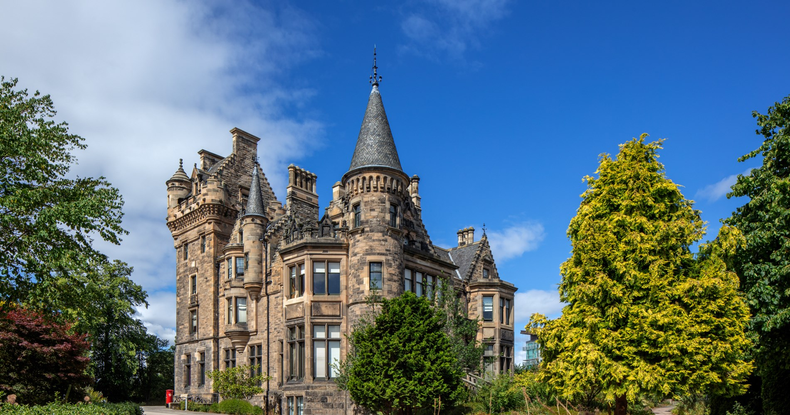

Cate Anstöter
Christina Miller Research Fellow Cate is a computational and theoretical chemist with a PhD in experimental physical chemistry (Durham University, 2019). She holds a Christina Miller Research Fellowship at the School of Chemistry, University of Edinburgh. Her research combines ab initio electronic structure methods and semi-empirical models to calculate and rationalise the structure-property-charge relationship of organic molecules and understand photon and electron driven chemical physics.
Cate was previously a senior PDRA in the Dessent group at the University of York (2022-2023). Prior to this she was a post-doctoral fellow in the , in the at Temple University in Philadelphia (2020-2021).
The conference begins on Monday noon with registration/welcome. The talks will begin after breakfast on Tuesday morning. The conference ends with lectures on Friday morning and departure at noon. The conference is divided into sessions with lectures having a more or less common theme. The first lecturer of each session functions as chairman and discussion leader of their session. The basic principle is that all participants give a talk, which limits the number of participants to about 35. All participants can show a poster. The posters are up during the whole conference.
About:
- 2022-2023: Senior PDRA, Dessent group (University of York)
- 2020-2021: Postdoctoral Fellow, Matsika group (Temple University)
- 2018: Invited Researcher Bochenkova group (Moscow State University)
- 2015-2019: PhD, Verlet group (Durham University)
- 2014-2015: MPhil, Popelier group (University of Manchester)
- 2010-2014: MChem, final year project with Patrick W. Fowler, FRS (University of Sheffield)
Awards and Fellowships:
- 2023: Christina Miller Research Fellowshup (University of Edinburgh)
- 2020: Ken Wade Prize for Outstanding Thesis (Durham University)
- 2014: Peter Maitlis Research Prize (University of Sheffield)